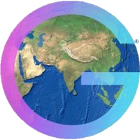

For a stable version of resume, please click here - Sid Resume 
Work Experience
Feb 2024 - Till date
Geospatial Science Researcher - II, NREL
May 2023 - Dec 2023
Computer Science - II Intern (GIS), NREL
- Delivered NoSQL database solutions for LiDAR data storage. Designed Python library wrapping complex GIS workflows to help create Normalized DSM (nDSM), DEM, and DSM with OGC Metadata Standards.
- Engineered geospatial big data (raster, vector) & geodatabase benchmarking. Developed Python functions to generate nDSM using USGS TNM API.
- Designed and tested geospatial databases using on-prem/hybrid solutions like MongoDB, RasDaMan, and AWS (Lambda, S3).
- Collaborated with GIS and computational science experts to develop Research Data Infrastructure (RDI) to reduce expertise threshold of working with geospatial data through Knowledge-Graph based data discovery service
Feb 2023 - Apr 2023
Graduate Project Assistant (GIS), Wisconsin Sea Grant
- Developed and delivered meticulous data migration solutions for the Great Lakes ArcGIS Story Map Series to ArcGIS Experience Builder. Designed interactive wireframes and provided user experience (UX) improvement solutions
Sep 2022 - Dec 2022
Graduate Teaching Assistant, Dept of Geography
- Responsible for teaching the lab component for Geog 377: Introduction to Geographic Information Systems (GIS) using ArcGIS Pro 3.0 for Fall 2022 under Professor A-Xing Zhu for a cohort of 81 students.
May 2022 - Sep 2022
Intern GIS Analyst, UW-Madison Brown County Extension
- Performed spatial & network analyses. Created an ArcGIS online (AGOL) web application and web map viewer for community gardens in Brown county, WI. Access report

- Collected and organized food sources data in Brown, Door, Kewaunee, and Manitowoc counties of Wisconsin. Created a successful public-facing interactive map product maneuvering over 42,000 views using GoogleMyMaps

- Designed a Google Sheets-based solution that allows non-GIS users to effortlessly update web maps. Conducted food desert analysis using socio-demographic & road network data adhering to USDA standards. Published a knowledge sharing product using an ArcGIS StoryMap
Apr 2022 - Sep 2022
GIS Database Assistant, WGNHS
- Performed spatial database editing using Arc Spatial Database Engine (ArcSDE) and attribute table updation for southwestern Wisconsin counties using legacy raster data.
- Synchronized geologic information related to Lead and Zinc mines as part of the USGS data preservation project and contributed to Wisconsin's Mineral Development Atlas (MDA).
Jan 2019 - Jan 2021
 Geodata Analyst, Larsen & Toubro Infotech (LTI Mindtree)
Geodata Analyst, Larsen & Toubro Infotech (LTI Mindtree)
- Worked on a big geodata management project, creating shapefiles & polygon boundaries. Developed quality control (QC) methods by creating Excel-based tools and contributed as a functional tester on the Mosaic automation tool.
- Delivered advanced processed geodata products: Seismic, Well log, Maps, and Reports using NeuraMap and Neuralog for Exxon Mobil (US). Improved data processing quality using a keywords-based error mitigation mechanism.
- Managed 12 resources as a sublayer QC and provided an enterprise-level solution that reduced data errors by 16%, which resulted in savings in data processing time by two minutes and 6 USD on invoice fines per document. Performed geotagging and data digitization using QGIS and SQL.
Technical Skills
Education
Jan 2022 - Dec 2023
University of Wisconsin-Madison
Master of Science in GIS & Cartography, GPA: 4.00
- Courses: Geographic Information Systems (GIS), Cartography, Geocomputing, Advanced Spatial Analysis, Graphic Design in Cartography, Advanced Geocomputing and Geospatial Big Data Analytics, Interactive Cartography and Geovisualization, Design and development of Spatial databases.
Jun 2015 - Aug 2019
Vignan's University
Bachelor of Technology in Petroleum Engineering, GPA: 3.91
- Courses: Geology, Probability & Statistics, Reservoir Engineering, HR Management, Project Management
Research & Achievements
- Presented a conference talk titled “Enhancing Cartographic Design Through Artificial Neural Networks: A Geometric Approach for Map Generalization” at 43rd North American Cartographic Information Society (NACIS) conference in Pittsburgh, PA in October 2023. (click here)
- Presented a poster titled "Geospatial data platform for all" using knowledge-graph at the US Department of Energy's Data Days Conference in Livermore, CA in October 2023. (DoE 2023)
- Received "Best Cartographic Research" award at NACIS 2023 in recognition of map work titled "Understanding Mars: The Goldilocks Planet." (click here)
- Nominated for Barbara Petchnick award for Graphic Design in recognition of cartographic works during academic year 2022 - 2023 at Department of Geography, University of Wisconsin - Madison.
- Published Environmental Sustainability of Drilling fluids in IIT-ISM Dhanbad conference indexed by Elsevier 2022
- Received gold medal for continuous academic excellence and best outgoing student award for overall performance and contribution during 2015-19 at Vignan University.
Certifications
- Cartographic Design from ESRI
- Data Analysis using Python from IBM
- Certified GIS Data developer from Geosys Enterprises (ESRI Bronze Partner)
- Environment, Health & Safety from IIT Madras.
{kind=link}
Projects
- Developed an open-source Python package namely
viawindto analyze the visual impact assessment of onshore wind turbines. For demo implementation, please checkout the jupyter notebook and YouTube link.
jupyter notebook and YouTube link.
Geog 778 : Practicuum in GIS development
Visual Impact Assessment
- Developed a Python package
osmnxelevationto integrate high-resolution DEM data into OSM road networks, enhancing walkability and bike-ability assessments with origin-destination matrix analysis and validated the results with Google Elevation API. Please checkout the readme.
Geog 699 : Directed Study
Enriching Open Street Map (OSM) Road Networks with Elevation Data
- Developed a database for exploring equitable access to veterinary care in Madison, WI using Postgres/PostGIS and optimized queries to reduce query time by 2000 ms while analyzing for veterinary deserts. Check out the GitHub link.
Geog 574 : Design and Development of Spatial Databases
Veterinary Clinics Database
- Data preparation, data analysis, data identification from satellite imagery data for municipal solid waste disposal facility construction.
 Geosys Enterprise Solutions, Hyderabad, India
Landuse and Landcover Analysis
- Developed several quality control methods for vintage seismic survey maps, well logs extracting metadata, navigation data, creating shapefiles, and polygon boundaries.
Larsen & Toubro Infotech (LTI Mindtree), Mumbai, India